Map in its own frame
Each agent estimates its keyframe poses by frame-to-model G-ICP and builds Gaussian submaps in its own reference frame. Its odometry error accumulates as it moves.
IROS 2026 Workshop
1Spatial AI and Robotics (SPARO) Lab, Inha University, South Korea
† Corresponding author
The idea
Collaborative 3D Gaussian splatting (3DGS) simultaneous localization and mapping (SLAM) provides scalable intelligence by merging the Gaussian maps that multiple agents build. To bring those maps into a common frame, each agent tracks its own odometry, and the server then closes loops between the agents by recognizing revisited places and estimating the relative pose of the matched keyframes. Building on this, state-of-the-art multi-agent 3DGS SLAM methods reconstruct scenes with remarkable rendering quality. However, once they are deployed in the real-world, they often suffer from two challenges: (i) intra-agent odometry error, where the odometry of each agent is not consistently accurate, and (ii) inter-agent constraint noise, where sensor noise corrupts the loop closures between the agents. To address these challenges, we present Co-GS SLAM, which refines the merged map and the keyframe poses of every agent together using a pose-dependent (PD) Gaussian model, achieving a geometrically and photometrically consistent merged map. Experiments on nine multi-agent sequences from four datasets demonstrate the highest rendering fidelity and the lowest trajectory error on all but one sequence. In addition, on our in-house dataset, recorded in the real-world, our Co-GS SLAM shows robust performance compared with state-of-the-art methods, averaging 4.1 cm of trajectory error against 11.8 cm and 10.0 dB more PSNR. Our code will be available upon acceptance.
How it works
The server merges the agents’ maps with no prior on their relative pose, then refines the map and every keyframe pose together.
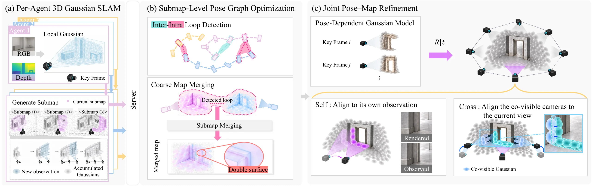
Each agent estimates its keyframe poses by frame-to-model G-ICP and builds Gaussian submaps in its own reference frame. Its odometry error accumulates as it moves.
Loop closures between agents enter a pose graph over all submaps. Optimizing it moves each submap rigidly, so errors inside a submap and noisy loop constraints remain after the merge.
The rendering loss over the keyframes of all agents is minimized over the Gaussians and the keyframe poses of every agent at once, starting from the merged map.
The key representation
Freeing the poses is not enough: from a poor merge, the joint refinement can settle with the region two agents share reconstructed twice.
The pose-dependent (PD) Gaussian model defines each Gaussian in the camera frame of the keyframe that added it, its anchor. A render then constrains not only its own viewing pose but also the anchor poses of every Gaussian it draws. Some of those anchors belong to the other agent, so the agents correct each other where their views overlap.
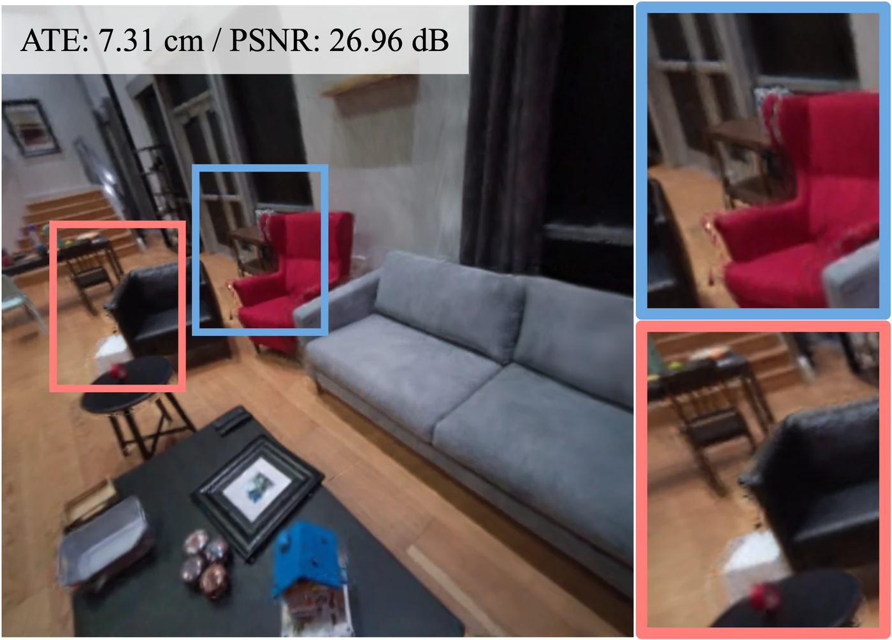
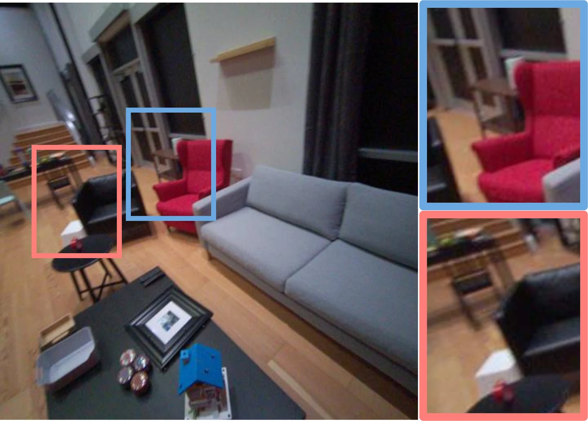
Aria room 0 after the joint refinement, with noise
injected into the inter-agent loop constraints. Keeping the
Gaussians in the world frame (a) leaves a second contour along
the back of the red chair and the arm of the black chair; the PD
model (b) recovers a single surface. The two renders differ by
only 0.15 dB PSNR, so this misalignment is one that PSNR barely
reports.
Quantitative results
Nine multi-agent sequences from four datasets, evaluated on the keyframes of the merged map.
Linear scale from zero. A bar with a break runs past the axis; its exact value is printed.
| Method | Replica | Aria | TUM | In-house | |||||
|---|---|---|---|---|---|---|---|---|---|
| apt 0 | apt 1 | apt 2 | office 0 | room 0 | room 1 | desk | Dream 1 | Dream 2 | |
| ATE RMSE ↓ (cm) | |||||||||
| MAGiC-SLAM | 0.240 | 0.382 | 0.482 | 0.285 | 1.751 | 0.737 | 14.30 | 7.9 | 15.7 |
| MAC-Ego3D* | 286.0 | 396.1 | 390.3 | 217.4 | 224.9 | 166.7 | 15.0 | 52.5 | 156.5 |
| CoKo-SLAM | 0.62 | 0.56 | 0.35 | 0.55 | 2.77 | 1.62 | 4815 | 15.4 | 38.8 |
| Ours (map only) | 0.201 | 0.262 | 0.154 | 0.162 | 0.799 | 1.380 | 4.240 | 5.211 | 6.711 |
| Co-GS SLAM (w/ PD) | 0.190 | 0.248 | 0.148 | 0.122 | 0.805 | 1.362 | 2.114 | 3.394 | 4.783 |
| Method | Replica | TUM | In-house | ||||
|---|---|---|---|---|---|---|---|
| apt 0 | apt 1 | apt 2 | office 0 | desk | Dream 1 | Dream 2 | |
| PSNR ↑ (dB) | |||||||
| MAGiC-SLAM | 37.53 | 31.31 | 31.35 | 39.46 | 15.77 | 23.56 | 21.56 |
| MAC-Ego3D* | 31.16 | 22.30 | 29.23 | 27.58 | 17.19 | 25.15 | 24.40 |
| CoKo-SLAM | 36.65 | 29.25 | 31.27 | 39.27 | 14.81 | 23.11 | 20.98 |
| Ours (map only) | 46.32 | 38.49 | 40.72 | 44.63 | 17.23 | 28.44 | 29.25 |
| Co-GS SLAM (w/ PD) | 46.89 | 38.99 | 41.36 | 45.34 | 23.39 | 34.55 | 34.93 |
| SSIM ↑ | |||||||
| MAGiC-SLAM | 0.982 | 0.963 | 0.961 | 0.992 | 0.615 | 0.846 | 0.772 |
| MAC-Ego3D* | 0.942 | 0.855 | 0.928 | 0.916 | 0.722 | 0.896 | 0.897 |
| CoKo-SLAM | 0.977 | 0.945 | 0.959 | 0.991 | 0.522 | 0.821 | 0.742 |
| Ours (map only) | 0.991 | 0.981 | 0.984 | 0.990 | 0.667 | 0.907 | 0.912 |
| Co-GS SLAM (w/ PD) | 0.992 | 0.982 | 0.986 | 0.991 | 0.826 | 0.961 | 0.960 |
| LPIPS ↓ | |||||||
| MAGiC-SLAM | 0.098 | 0.148 | 0.179 | 0.058 | 0.517 | 0.342 | 0.415 |
| MAC-Ego3D* | 0.176 | 0.287 | 0.180 | 0.191 | 0.337 | 0.115 | 0.119 |
| CoKo-SLAM | 0.112 | 0.187 | 0.185 | 0.062 | 0.611 | 0.347 | 0.437 |
| Ours (map only) | 0.024 | 0.054 | 0.049 | 0.026 | 0.437 | 0.235 | 0.237 |
| Co-GS SLAM (w/ PD) | 0.022 | 0.053 | 0.047 | 0.024 | 0.259 | 0.147 | 0.152 |
| Depth L1 ↓ (cm) | |||||||
| MAGiC-SLAM | 0.63 | 1.57 | 0.98 | 0.39 | 9.40 | 11.47 | 25.72 |
| MAC-Ego3D* | 9.04 | 29.02 | 18.98 | 22.97 | 6.10 | 10.56 | 16.14 |
| CoKo-SLAM | 0.73 | 2.15 | 1.31 | 0.41 | 9.50 | 13.56 | 28.99 |
| Ours (map only) | 0.22 | 0.79 | 0.43 | 0.27 | 4.42 | 1.83 | 3.00 |
| Co-GS SLAM (w/ PD) | 0.20 | 0.75 | 0.40 | 0.24 | 5.85 | 2.42 | 4.15 |
| Method | Novel views | Training views | ||||
|---|---|---|---|---|---|---|
| room 0 | room 1 | Avg. | room 0 | room 1 | Avg. | |
| PSNR ↑ (dB) | ||||||
| MAGiC-SLAM | 22.16 | 22.08 | 22.12 | 26.85 | 27.44 | 27.15 |
| MAC-Ego3D* | 13.37 | 16.24 | 14.81 | 22.49 | 22.76 | 22.63 |
| CoKo-SLAM | 20.98 | 21.34 | 21.16 | 27.57 | 27.67 | 27.62 |
| Co-GS SLAM (w/ PD) | 25.97 | 22.39 | 24.18 | 30.41 | 31.97 | 31.19 |
| SSIM ↑ | ||||||
| MAGiC-SLAM | 0.767 | 0.797 | 0.782 | 0.923 | 0.936 | 0.930 |
| MAC-Ego3D* | 0.527 | 0.693 | 0.610 | 0.807 | 0.839 | 0.823 |
| CoKo-SLAM | 0.740 | 0.770 | 0.755 | 0.933 | 0.935 | 0.934 |
| Co-GS SLAM (w/ PD) | 0.861 | 0.774 | 0.817 | 0.920 | 0.949 | 0.934 |
| LPIPS ↓ | ||||||
| MAGiC-SLAM | 0.391 | 0.323 | 0.357 | 0.203 | 0.157 | 0.180 |
| MAC-Ego3D* | 0.592 | 0.566 | 0.579 | 0.359 | 0.446 | 0.403 |
| CoKo-SLAM | 0.407 | 0.344 | 0.376 | 0.201 | 0.164 | 0.183 |
| Co-GS SLAM (w/ PD) | 0.245 | 0.281 | 0.263 | 0.176 | 0.136 | 0.156 |
| Depth L1 ↓ (cm) | ||||||
| MAGiC-SLAM | 3.20 | 5.10 | 4.15 | 1.92 | 1.30 | 1.61 |
| MAC-Ego3D* | 90.81 | 33.78 | 62.30 | 36.22 | 23.41 | 29.82 |
| CoKo-SLAM | 3.48 | 6.12 | 4.80 | 1.43 | 1.66 | 1.55 |
| Co-GS SLAM (w/ PD) | 3.26 | 5.65 | 4.46 | 3.97 | 3.04 | 3.51 |
Bold marks the best result as ranked in the paper. “Map only” is our refinement with the keyframe poses held fixed. All methods run with the authors’ code under an unknown relative pose, with the transform between agents initialized to the identity. *MAC-Ego3D assumes that transform to be known, so it is reported outside the setting it was designed for.
Qualitative results
The merged map rendered at a keyframe of each agent, with no initial transform between the agents.
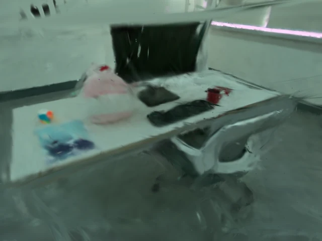
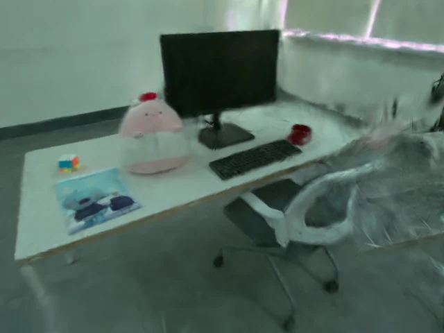
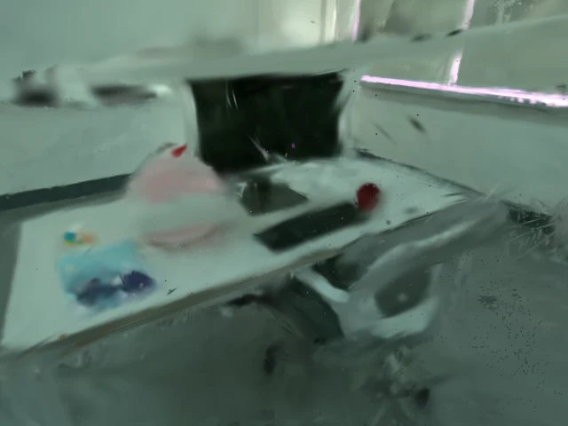
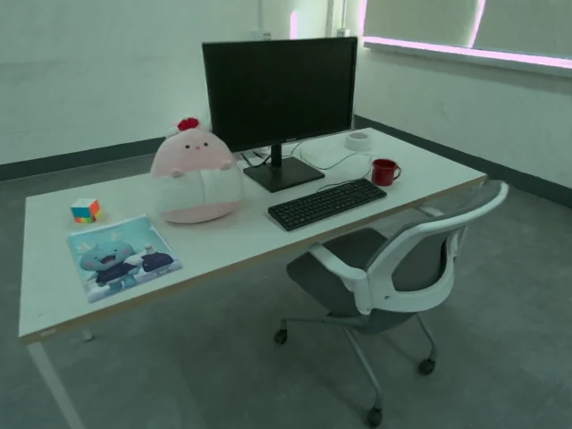
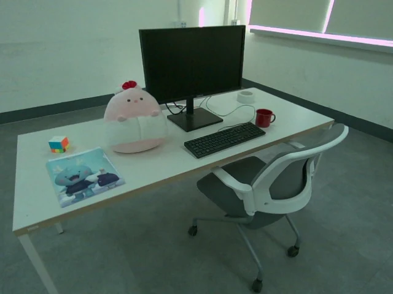
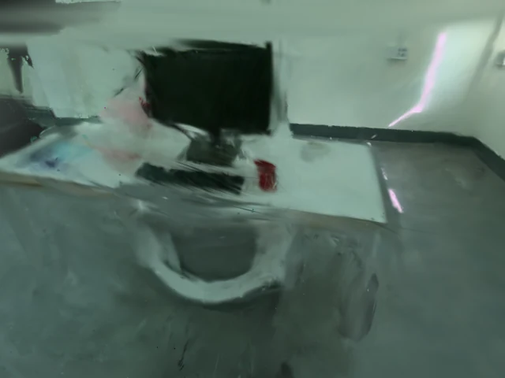
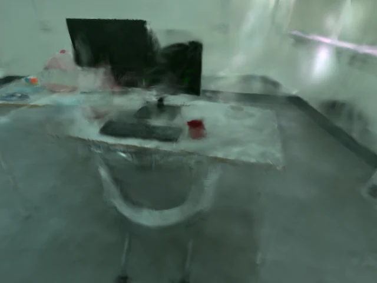
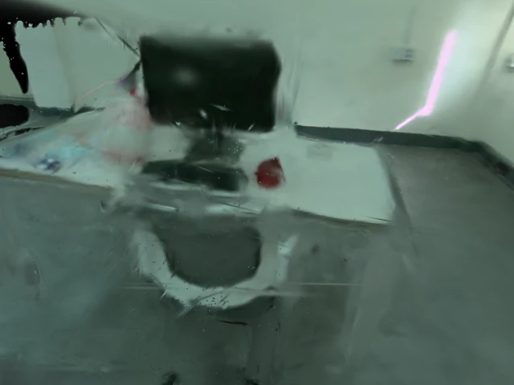
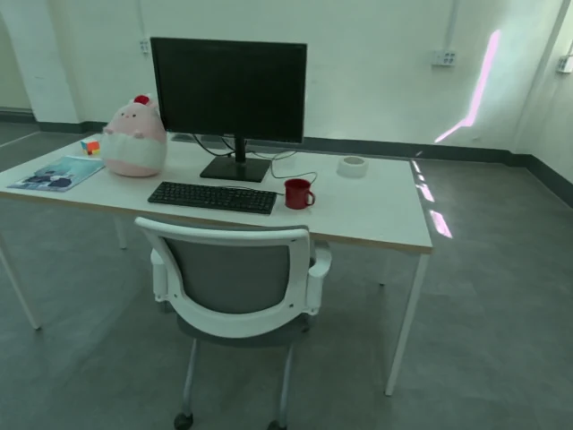
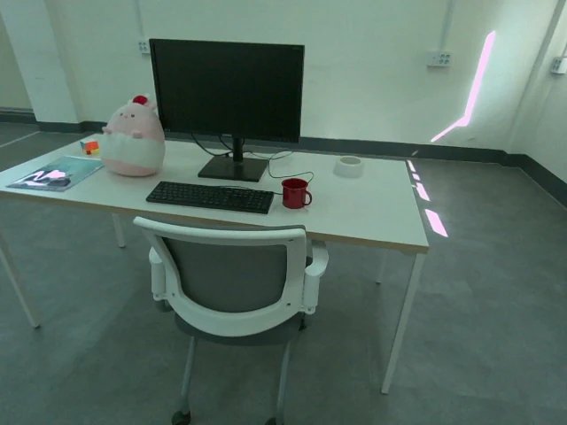
The two rows are the two overlapping viewpoints whose disagreement the refinement uses. The baselines absorb the residual of the merge as blur and duplicated surfaces over the desk and the chair, while refining the poses together with the map recovers the keyboard, the monitor and the chair frame from both sides.
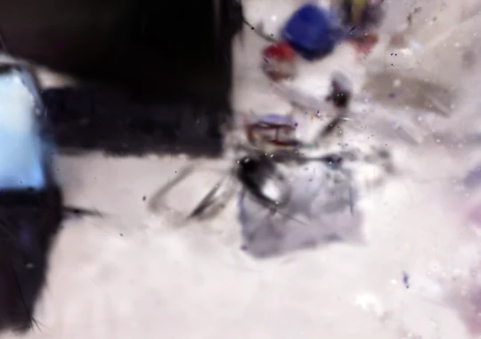
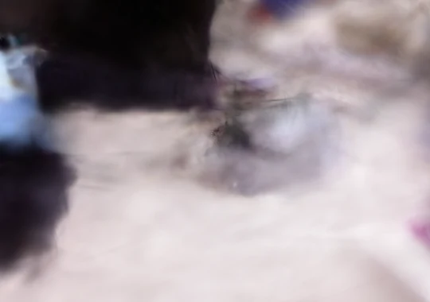
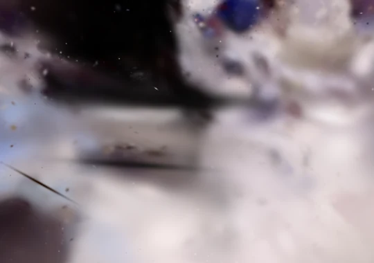
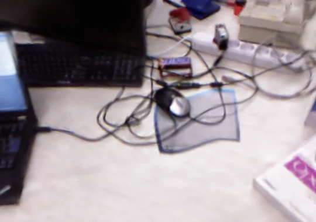
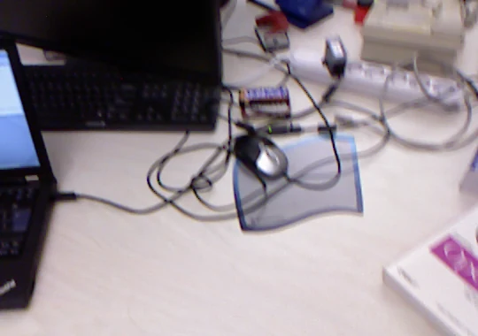
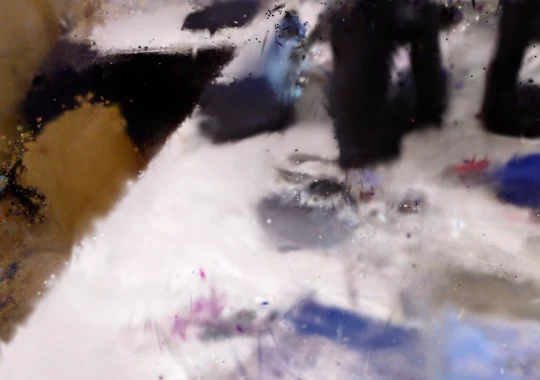
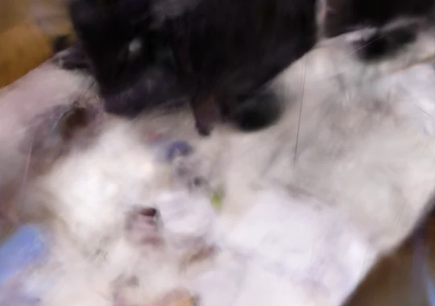
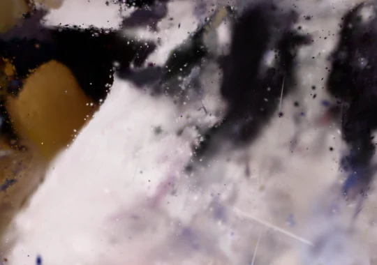
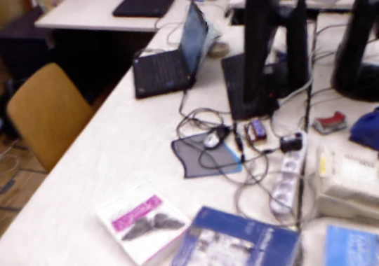
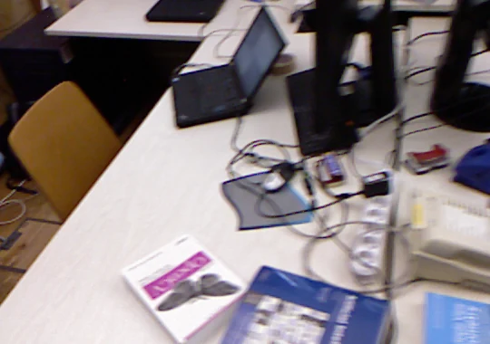
Each TUM agent drifts on its own, so this is the hardest case of intra-agent odometry error. The baselines absorb the pose error as blur and smeared surfaces, while refining the poses together with the map recovers the monitor, the keyboard and the books from both viewpoints.
Real-world evaluation
Two indoor sequences, each pairing two independent recordings as two agents.
Citation
@inproceedings{sim2026cogsslam,
title = {Co-GS SLAM: Collaborative 3D Gaussian Splatting SLAM with Pose-Dependent Gaussian Model},
author = {Sim, Taehu and Kim, Hogyun and Choi, Jiwon and Lee, Juhui and Cho, Younggun},
booktitle = {IROS 2026 Workshop and Competition on Intelligent Information Gathering for Single and Multi-Robot Systems},
year = {2026}
}